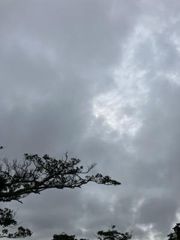
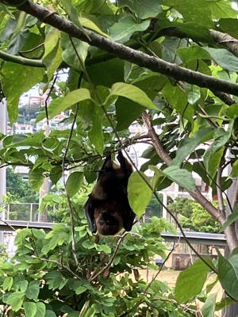
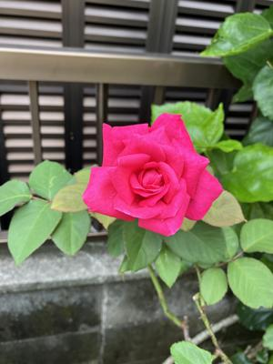

うるがいの話 ある日
最新: 鼻濁音（びだくおん）【うるがいの話 ある日】とは 一日だけのプログです
『うるがいの話』の最新一日だけのプログで、通信料が少なく経済的だ。カニの画像をクリックすると全ての日付が載る『うるがいの話』サイトを表示します
|
|
【うるがいの話】 うるがい(ｳﾙｶﾞｲ urugai)とは、『もずくがに』の名前でとても大きくなります。 |
|---|---|
|
|
【カミマヤーの話】 猫のことを方言でマヤーといいます。カミマヤー（kamimayaa）とは、神の猫のことです。 |
|
【たながぁの音楽】 たながぁ（ﾀﾅｶﾞｰ tanagaa）とは手長えびのことで、何種類かあり大きいのは車 エビぐらいになります。 |

|
【ぶながぁの話】 ぶながぁ(ﾌﾞﾅｶﾞｰ bunagaa)とは、赤い髪の毛、赤い身体、そして身長は１ｍ２０ｃｍ ぐらい、川の蟹を食べているの目撃された。場所は沖縄県国頭郡大宜味村のと ある村僕の隣近所に住んでいる爺さんから、聞いた話です。 |
|
|
【ギーマの話】 ギーマ(giima)とは、山原の里山に咲くスズランに似た、 花を付けます。実は食べられます、 気が付くと口の周りが紫になっています。 |
2024年05月24日 (金）鼻濁音（びだくおん）
15:29
 
井上ひさし ベスト・エッセイ より
カ゚キ゚ク゚ケ゚コ゚
表題のカタカナの右肩に丸がついているのは、ご存じのように、鼻濁音です
よという印である。鼻濁音とは、これもご存じのとおり「鼻に抜けて柔らか
く聞こえる音」のことで、語頭以外のガ行音にあらわれる。「ガッコウ（学
校）」では、ガは語頭にあるからこれは硬い音、しかし「オンガク（音楽）
」では、ガは語中にあるので柔らかい音、すなわち鼻濁音になる。
とあるサイトより（「NHK放送文化研究所」）ホーム
演歌ではきれいな鼻濁音を使っていますが、ニューミュージックといわれ始
めた頃から濁音化が歌の世界でも広がっています。『津軽海峡冬景色』は「
ツガルカイキョーフユゲシキ」で「が、げ」は鼻濁音になります。
荒井由美の『卒業写真』は「ソツギョーシャシン」で「ギョ」は濁音で歌わ
れています。
゜（半濁点）をつけるのに苦労したぜ！、グーグルのＯＣＲではガギクゲゴ
と変換する。還暦すぎて初めて知ったことばである、アナウンサーの職業で
は常識らしい。なおヨメは、知っていた。おー

昨日、居間から外をみるとコウモリが見えた。ＮＨＫに写真を投稿する。
１５時２１分 ビットコインの総資産 ￥３０、７４３（↓７８０）